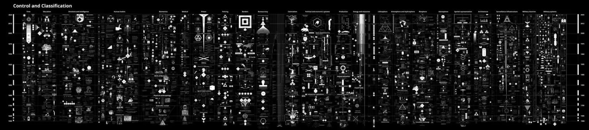

CALCULATING EMPIRES
A Genealogy of Power and Technology, 1500–2025
Kate Crawford and Vladan Joler (2023)

ABOUT:
Calculating Empires: A Genealogy of Technology and Power Since 1500 (2023), by Kate Crawford and Vladan Joler, is a large-scale visual map that traces the historical relationship between technology, power, colonialism, and systems of extraction from the sixteenth century to the present. By connecting political, economic, and technological developments across five centuries, the work reveals how contemporary computational systems are rooted in long-standing structures of domination, resource extraction, and knowledge production.